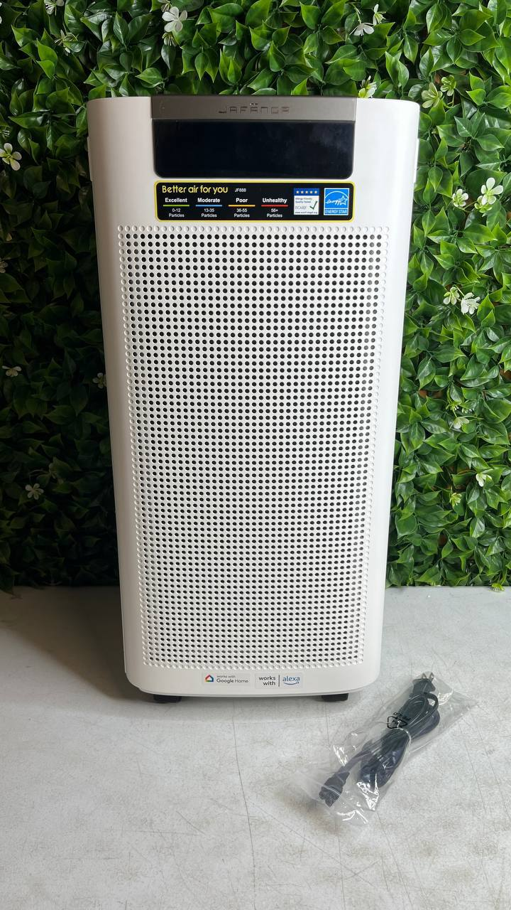

Air purifiers have become one of the most popular home appliances in recent years. Many people use them to make indoor air feel fresher, reduce dust in the room, and create a more comfortable environment at home.
But with so many models available, choosing the right air purifier can feel confusing. This guide explains how air purifiers work, how to choose the right size, and what features actually matter.

Air purifiers help circulate and filter indoor air. Many people notice less dust on surfaces and a fresher feeling in rooms where a purifier runs regularly.
They are commonly used in bedrooms, living rooms, and home offices where people spend a lot of time during the day.
As homes become more sealed and energy efficient, many people choose air purifiers to improve air circulation inside their living space.
One of the most important factors when choosing an air purifier is room size. Every purifier is designed to handle a certain area.
A simple way to estimate the right size is to measure the square footage of the room. For example:
• Small rooms (100–200 sq ft) usually require compact purifiers • Medium rooms (200–400 sq ft) benefit from mid-size units • Large spaces (400+ sq ft) need higher airflow models
Choosing a purifier that matches the room size helps it circulate air efficiently and maintain consistent performance.
Many households today use air purifiers simply to improve the comfort of their living space. Running a purifier can help reduce airborne particles like dust and help maintain cleaner indoor air circulation.
People often place air purifiers in bedrooms so the air feels fresher overnight or in living areas where families spend most of their time.
Another reason for their popularity is convenience. Modern air purifiers often include quiet modes, automatic fan speeds, and filter replacement reminders.
Some of the most widely known brands include Dyson, Levoit, Honeywell, Blueair, and Coway. These companies produce a range of air purifiers designed for different room sizes and budgets.
Many models also include HEPA-style filtration systems and multiple fan speeds so users can adjust performance depending on room conditions.
If you want to see current air purifier deals available in our warehouse inventory, you can browse our live catalog below.
Browse Air Purifier Deals More Home Appliances DealsInventory changes regularly, and many items appear at significantly lower prices than traditional retail stores.